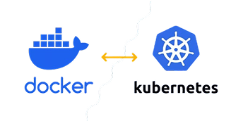

ML-Engineer
ML Engineer — це фахівець, який поєднує знання в галузях машинного навчання
🎯 Основні обов'язки
Забезпечення безперебійного впровадження моделей машинного навчання в продуктивне середовище та їх оптимізація для стабільної роботи.
Створення та підтримка CI/CD-пайплайнів для автоматизованого тестування, валідації та розгортання моделей.
Впровадження систем моніторингу для відстеження метрик моделей, виявлення дрейфу даних та забезпечення їхньої актуальності.
Забезпечення версіонування моделей та даних для відтворюваності та відповідності вимогам регуляторів.
👓Шлях до професії
Освіта
1
Отримайте технічну освіту в галузі комп'ютерних наук, інженерії або суміжній сфері. Вивчіть основи ML, DevOps, CI/CD.
Технології
2
Освойте інструменти для автоматизації, контейнеризації та деплойменту (Docker, Kubernetes, Jenkins, MLflow, Terraform).
Досвід
3
Отримайте практичний досвід: беріть участь у проєктах з розгортання моделей, автоматизації пайплайнів, моніторингу продуктивності ML-систем.
Розвиток
4
Відвідуйте профільні події, слідкуйте за трендами (MLOps Community, Kubeflow, Vertex AI тощо).
⚙ Які навички потрібні MLOps інжинеру
Технічні навички (Hard Skills):
- Python
- Docker, Kubernetes
- CI/CD (Jenkins, GitHub Actions)
- MLflow, DVC, Airflow
- Хмарні платформи (AWS, GCP, Azure)
- Linux, Bash
- Моніторинг (Prometheus, Grafana)
- Архітектура ML-систем
Особисті якості (Soft Skills):
- Системне мислення
- Комунікабельність
- Вміння вирішувати проблеми
- Робота в команді
- Уважність до деталей
🔥Затребуваність
Середня $зарплата$ MLOps інженерів в Україні(2025)
Оптимізація
MLflow, DVC (Data Version Control), Weights & Biases.

Моніторинг
Prometheus, Grafana, ELK Stack (Elasticsearch, Logstash, Kibana).
Популярні інструменти
Контейнеризація
Docker, Kubernetes.
Хмарні сервіси
AWS SageMaker, Google AI Platform, Azure Machine Learning
🚀 Перспективи кар'єри

- MLOps Engineer – ключова фігура в успішному впровадженні ML-рішень.
- Поєднання технічних навичок та комунікаційних здібностей.
- Постійний розвиток та навчання – запорука успіху в цій ролі.
📖Де отримати освіту?
Освіта в Україні
🎓 Університети
- КПІ (НТУУ «Київський політехнічний інститут»)
- КНУ імені Тараса Шевченка
- Львівська політехніка
- Харківський політехнічний інститут
🧑💻 Курси та школи
Освіта за кордоном
🎓 Університети
- ETH Zurich (Швейцарія)
- TU Munich (Німеччина)
- University of Toronto (Канада)
- Carnegie Mellon University (США)